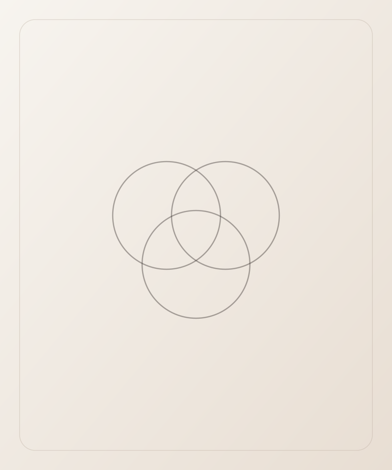
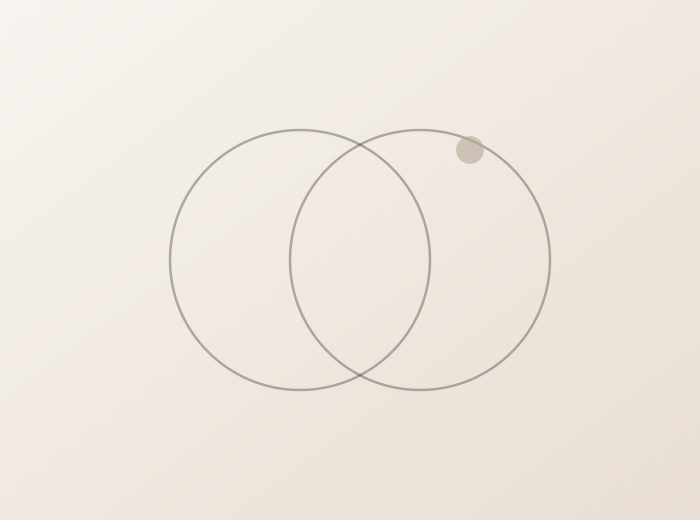

Emagrecimento
Acompanhamento médico voltado ao emagrecimento, sempre a partir de uma avaliação individual.
Agendar avaliação →
A Medicina Integrativa considera saúde, bem-estar e acompanhamento médico como partes de uma mesma jornada. Cada avaliação parte das suas necessidades individuais, para construir um caminho de cuidado próprio.

A Medicina Integrativa da Dra. Daniele Murga considera a pessoa de forma ampla, unindo conhecimento médico a uma escuta individual. Cada acompanhamento parte de uma avaliação cuidadosa, respeitando a história e as necessidades de cada paciente.
Acompanhamento médico voltado ao emagrecimento, sempre a partir de uma avaliação individual.
Agendar avaliação →Avaliação e acompanhamento relacionados ao equilíbrio hormonal, conforme indicação médica.
Agendar avaliação →Acompanhamento nutricional voltado à reposição de vitaminas e oligoelementos, conforme necessidade individual.
Agendar avaliação →Abordagem médica voltada ao equilíbrio da flora intestinal, a partir de avaliação individual.
Agendar avaliação →Como Médica Integrativa e Dermatologista, ofereço um plano terapêutico hormonal e alimentar completo para essa fase tão especial da mulher.
Agendar avaliação →Protocolo exclusivo que combina consultas ortomoleculares e tecnologias avançadas para eliminar o peso e as gordurinhas indesejáveis.
Agendar avaliação →Consulta ortomolecular, drenagem linfática e associação de tecnologias que visam reduzir a dor, o inchaço e o desconforto causados pelo acúmulo anormal de gordura.
Agendar avaliação →Benefícios que vão do relaxamento muscular e alívio do estresse até a melhora da circulação e do metabolismo.
Agendar avaliação →Emagrecimento, equilíbrio hormonal, reposição nutricional e acompanhamento da menopausa fazem parte de uma mesma jornada: entender suas necessidades para construir, com acompanhamento médico, um caminho de cuidado individual.

Cada pessoa tem uma história, uma rotina e necessidades próprias. Por isso, o acompanhamento em Medicina Integrativa é sempre pensado de forma individual, unindo saúde e bem-estar sob olhar médico.
Uma avaliação individual para cuidar de você por inteiro, com acompanhamento médico dedicado.
Agendar avaliação